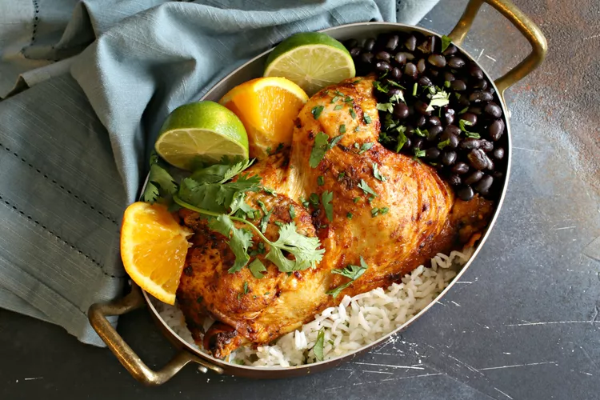

Cuban Mojo Chicken

Description
Mojo (pronounced mo-ho) is a Cuban marinade and sauce that typically includes oil, garlic, cilantro, salt, and sometimes hot peppers such as jalapeño. But the hallmark of the sauce is the heavy emphasis on citrus, particularly sour orange. Since sour oranges can be hard to locate in some areas, our mojo chicken recipe uses a combination of easy-to-find navel oranges and fresh limes. The result? Juicy, flavorful, and oh so citrusy. It can be used to marinate beef, fish, or chicken and also makes an excellent sauce.
This recipe for mojo chicken showcases that wonderful tangy, citrusy flavor you expect, and the chicken comes out tender, juicy, and moist. Perfect for a warm summer day or to enjoy on a winter day when you want to reminisce about the upcoming spring and summer months. Serve this with black beans and rice, and don't forget the addition of fried plantains for the ultimate meal.
Ingredients
- 1 orange, zested
- 1 lime,zested
- 1/2 cup fresh orange juice
- 1/4 cup fresh lime juice
- 1/2 cup olive oil
- 1/4 cup fresh cilantro, chopped
- 6 cloves garlic, smashed
- 1 jalapeño pepper, sliced, optional
- 1 teaspoon dried oregano
- 1 teaspoon ground cumin
- 1 teaspoon kosher salt
- 1/4 teaspoon freshly ground black pepper
- 1 whole roasting chicken
- Orange and lime slices, optional garnish
Steps
- Gather the ingredients
- In a large bowl, combine the orange zest, lime zest, orange juice, lime juice, olive oil, cilantro, garlic cloves, jalapeño (if using), oregano, cumin, salt, and black pepper.
- Place the chicken into the marinade, cover with plastic wrap, and refrigerate for at least 4 hours or overnight. You can also do this in a large zip-top bag, but be sure to place the bag into a large bowl to safeguard against drips.
- Preheat oven to 400 F. Remove the chicken from the marinade and place on a large roasting pan. If you like, tie the legs together with kitchen string and tuck the wing tips under the body to help prevent them from darkening too much.
- Roast in the oven for approximately 1 1/2 hours, or until the thickest part of the thigh reaches 165 F on a meat thermometer. If the breast starts to get too dark while roasting, cover loosely with a sheet of aluminum foil.
- Remove from the oven, cover loosely with aluminum foil, and allow to rest for about 10 minutes before carving.
- Garnish with orange and lime slices (if using) and serve with rice and black beans.